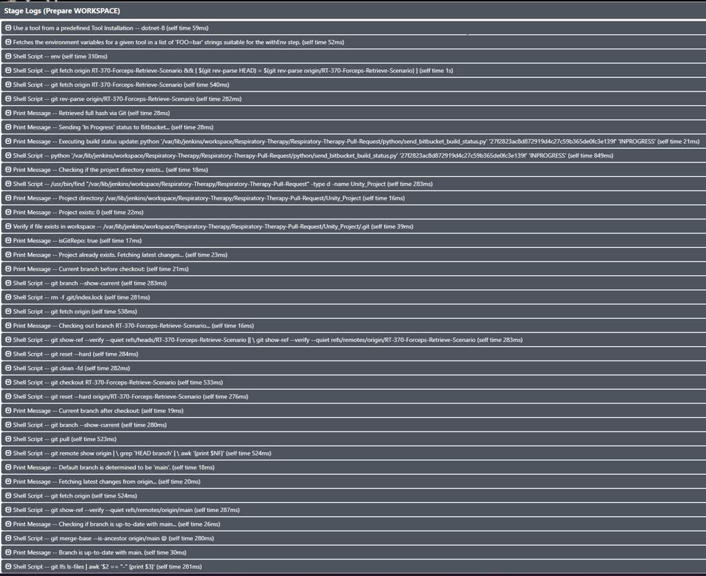
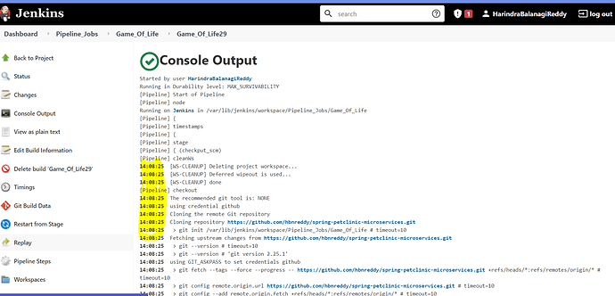

3-Level Logger System Design & Integration
Hierarchical logging system design for consistent logging in Jenkins Pipeline
Table of Contents
- Design Background
- Problem: Issues with Existing Logging
- Solution: Discovering Chunking Units (Steps Group)
- Architecture Integration
- Position within 4-Layer Architecture
- Library-Helper Auto Logging Integration
- Integration with shellScriptHelper
- Before/After Comparison
1. Design Background
1.1 Problem: Issues with Existing Logging
1.1.1 Problem Summary
| # | Problem | Description |
|---|---|---|
| 1 | Lack of Consistency | Different logging formats in each file |
| 2 | Lack of Structure | No cognitive chunking unit besides Stage |
| 3 | Jenkins Output Constraints | Format customization impossible due to CPS/Sandbox |
| 4 | Code Duplication | logMessage() function copied across multiple files |
1.1.2 Lack of Consistency
Different logging methods in each file:
| File | Logging Method | Problem |
|---|---|---|
generalHelper.groovy |
logMessage() function |
Self-implemented |
jsHelper.groovy |
logMessage() function |
Same copy as generalHelper (DRY violation) |
Jenkinsfile |
Direct echo call |
No format |
1.1.3 Lack of Structure: Cognitive Chunking Impossible
Problem: In the entire Pipeline, except for Stage, there is no conceptual distinction useful for human recognition
In cognitive psychology, Chunking is a strategy for processing information by grouping it into meaningful units. The clearer the boundary, the faster and easier it is to receive information.
| Current State | Problem |
|---|---|
| Stage → (all logs listed flat) | Dozens of lines of logs without intermediate units |
| Individual Steps listed | Cannot distinguish logical task groups |
| When error occurs | Difficult to trace "where did the error occur?" |
1.1.4 Jenkins Logging System Limitations
1.1.4.1 Same echo Call → Simultaneous Output to Two Places
| Stage View (actual screenshot) | Console Output (example) |
|---|---|
|  |  |
| Log visible in Pipeline Stage UI | Same log example visible in Console Log |
Core Problem: A single
echocall outputs to both Stage View and Console Output, and neither can customize the format
1.1.4.2 Output Flow
flowchart LR
subgraph Groovy["Pipeline Script"]
ECHO["echo 'message'"]
SH["sh 'command'"]
end
subgraph Jenkins["Jenkins Internal"]
CPS["CPS Transform"]
LOG["Console Logger"]
end
subgraph Output["Output (Fixed Format)"]
STAGE["Stage View"]
CONSOLE["Console Output"]
end
ECHO --> CPS
SH --> CPS
CPS --> LOG
LOG --> STAGE
LOG --> CONSOLE
style CPS fill:#ff6b6b,stroke:#333
style LOG fill:#ff6b6b,stroke:#3331.1.4.3 Constraints
| Constraint | Description |
|---|---|
| Fixed format | Timestamp + [Pipeline] marker + message mixed |
| Flat structure | All echo, sh commands listed at the same level |
| No customization | Jenkins Content Security Policy enforces UI output format |
| No hierarchy | Difficult to find specific tasks in long logs |
1.1.4.4 Jenkins Content Security Policy Constraints (Reference)
Jenkins applies a restrictive Content Security Policy by default to prevent XSS attacks:
Do not use inline JavaScript (JS) in the Jenkins GUI, i.e., JS embedded in HTML output.
- Default CSP:
default-src 'none'- blocks scripts, fonts, iframes, etc. - Cannot customize Console Output UI (requires system property modification with admin privileges)
echoandprintlnare processed identically internally by Jenkins (reference)
1.1.5 Code Duplication (DRY Violation)
// generalHelper.groovy line 35-44
void logMessage(String message) { ... }
// jsHelper.groovy line 7-16 (exact same copy)
void logMessage(String message) { ... }
1.2 Solution: Discovering Chunking Units (Steps Group)
1.2.1 What is Steps Group?
A group where multiple Steps come together to form a meaningful unit of work (Task).
Stage: Jenkins Initialization
│
├── Steps Group: "Set Up Environment Variables" ← Meaningful unit of work
│ ├── Step: Configure Report Directory
│ ├── Step: Extract ticket number
│ └── Step: Set build parameters
│
└── Steps Group: "Send Build Status" ← Meaningful unit of work
├── Step: Prepare API request
└── Step: POST to Bitbucket API
1.2.2 3-Level Logger Design
Jenkins Provides vs What's Needed:
| Jenkins Default | Actually Needed |
|---|---|
Stage Level: stage('name') { ... } |
Stage Level |
| (None) | Steps Group Level ← Newly introduced |
Step Level: sh, echo, withCredentials, etc. |
Step Level |
Conclusion: Steps Group level is needed between Stage and Step
3-Level Structure:
┌─────────────────────────────────────────────────────────────┐
│ Level 1: Stage │
│ ===== STAGE Starting: [ Jenkins Initialization ] ===== │
├─────────────────────────────────────────────────────────────┤
│ Level 2: Steps Group │
│ --- STEPS Starting Group: [ Set Up Environment ] --- │
├─────────────────────────────────────────────────────────────┤
│ Level 3: Step (by status) │
│ ➡️ Step Starting: [ Configure Report Directory ]... │
│ 💬 Step Info: [ REPORT_DIR: /workspace/PRJob ] │
│ 🏃 Step Processing: [ Fetching origin branches ] │
│ ✅ Step Completed: [ Configure Report Directory ] │
│ ⚠️ Step Warning: [ Branch not found, using default ] │
│ ❌ Step Failed: [ Git fetch failed ] │
│ 🔥 Step Error: [ Exception occurred ] │
└─────────────────────────────────────────────────────────────┘
Step Status Classification:
| Status | Emoji | Usage |
|---|---|---|
| Starting | ➡️ | Task start notification |
| Info | 💬 | Informational message (variable values, settings, etc.) |
| Processing | 🏃 | Task in progress |
| Success | ✅ | Task completed successfully |
| Warning | ⚠️ | Warning (can continue) |
| Failed | ❌ | Task failed (recoverable) |
| Error | 🔥 | Serious error (pipeline stops) |
Logger API:
// Level 1: Stage
logger.stageStart(stageName)
logger.stageEnd(stageName)
// Level 2: Steps Group
logger.stepsGroupStart(groupName)
logger.stepsGroupEnd(groupName)
// Level 3: Step (by status)
logger.stepStart(description)
logger.stepInfo(description)
logger.stepProcessing(description)
logger.stepSuccess(description)
logger.stepWarning(description)
logger.stepFailed(description)
logger.stepError(description)
logger.stepError(description, Throwable) // Including stack trace
1.2.3 Design Result: Logging Responsibility Distribution by Layer
Introduced a 3-Level chunking-based logging system to the Pipeline domain and integrated with the existing 4-Layer Architecture to implement a systematic solution where each layer only handles logging responsibility appropriate to its role.
| Component | Role | Logging Responsibility |
|---|---|---|
| Logger | 3-Level chunking system (Stage/Steps Group/Step) | Output format, hierarchy structure definition |
| Library | Cognitive classification unit for specific functions within domain | Define label appropriate for that function |
| Helper | Domain logic orchestration | Call logger according to orchestration flow |
| Stage | Business workflow | Define Steps Group boundaries |
See Section 2: Architecture Integration for detailed implementation
2. Architecture Integration
2.1 Position within 4-Layer Architecture
┌─────────────────────────────────────────────────────────────┐
│ Layer 1: Entry Point (Jenkinsfile) │
├─────────────────────────────────────────────────────────────┤
│ Layer 2: Orchestration (vars/stage*.groovy) │
│ ↓ uses │
├─────────────────────────────────────────────────────────────┤
│ Layer 3: Business Logic (src/service/) │
│ ↓ uses │
├─────────────────────────────────────────────────────────────┤
│ Layer 4: Infrastructure │
│ ┌─────────────────┬─────────────────┬─────────────────┐ │
│ │ src/utils/ │ src/resource/ │ vars/ (Cross) │ │
│ │ *Library.groovy │ Status.groovy │ ┌─────────────┐ │ │
│ │ │ │ │ logger │ │ │
│ │ │ │ │ bitbucket │ │ │
│ │ │ │ │ ApiLibrary │ │ │
│ │ │ │ └─────────────┘ │ │
│ └─────────────────┴─────────────────┴─────────────────┘ │
└─────────────────────────────────────────────────────────────┘
Logger's Position: Layer 4 (Infrastructure) - Cross-Cutting Concerns
2.2 Library-Helper Auto Logging Integration
Logger is used system-wide as a Cross-Cutting Concern: - Used by all Stage modules - shellScriptHelper, bitbucketApiHelper internally use logger (auto logging) - Single entry point for unified logging format
2.2.1 Embedding Logging Metadata in Library
(a) Shell Script Logging Integration
flowchart LR
subgraph Libraries["Shell Libraries"]
GIT[GitLibrary]
SHL[ShellLibrary]
SSHL[SSHShellLibrary]
end
subgraph Helper["shellScriptHelper"]
VALIDATE[validateShMap]
EXEC[execute]
end
subgraph Logger["logger"]
START[stepStart]
SUCCESS[stepSuccess]
FAILED[stepFailed]
RESULT[stepShellExecutedResult]
end
GIT -->|"{script, label}"| VALIDATE
SHL -->|"{script, label}"| VALIDATE
SSHL -->|"{script, label}"| VALIDATE
VALIDATE --> START
VALIDATE --> EXEC
EXEC -->|success| SUCCESS
EXEC -->|failure| FAILED
EXEC -->|result| RESULTCore Design: Each Library's closure includes label metadata for Helper to auto-log
// GitLibrary.groovy - Each closure includes script + label
static final Closure FetchOriginReturnStatus = {
[
script: 'git fetch origin',
label: 'Fetch all remote branches from origin', // ← Logging metadata
returnStatus: true
]
}
static final Closure CheckoutBranch = { String branchName ->
[
script: "git checkout ${branchName}",
label: "Checkout branch '${branchName}'", // ← Parameterized label
returnStdout: true
]
}
(b) Bitbucket API Logging Integration
flowchart LR
subgraph Library["bitbucketApiLibrary"]
BUILD[createBuildStatus]
REPORT[createTestReport]
end
subgraph Helper["bitbucketApiHelper"]
CALL[call]
HTTP[HttpApiService]
end
subgraph Logger["logger"]
START[stepStart]
SUCCESS[stepSuccess]
ERROR[stepError]
end
BUILD -->|"{apiUrl, body, method}"| CALL
REPORT -->|"{apiUrl, body, method}"| CALL
CALL --> START
CALL --> HTTP
HTTP -->|success| SUCCESS
HTTP -->|failure| ERRORSame Pattern Applied
| Library | Metadata | Usage |
|---|---|---|
| GitLibrary | script, label |
Shell command + log message |
| ShellLibrary | script, label |
Shell command + log message |
| SSHShellLibrary | script, label |
SSH command + log message |
| bitbucketApiLibrary | apiUrlString, requestBody, method |
API request info |
2.2.2 Helper Auto Logging with Metadata
shellScriptHelper: Reads label from Library and automatically calls logger
// shellScriptHelper.groovy
def call(Closure shellScriptClosure, List args = []) {
Map shMap = shellScriptClosure(*args)
Map validatedShMap = validateShMap(shMap)
// Read label for auto logging
logger.stepStart("'${validatedShMap.script}' '${validatedShMap.label}' (Execute)")
if (validatedShMap.returnStatus) {
return executeReturnStatus(validatedShMap) // Success/failure logging inside
} else if (validatedShMap.returnStdout) {
return executeReturnStdout(validatedShMap) // Result logging inside
}
// ...
}
bitbucketApiHelper: Same pattern for API execution + auto logging
// bitbucketApiHelper.groovy
def call(Map bitbucketApiMap) {
logger.stepStart("bitbucketApiHelper execution started")
// Execute API with Map received from bitbucketApiLibrary
if (bitbucketApiMap.method == 'POST') {
return bitbucketApiService.post(
bitbucketApiMap.apiUrlString,
bitbucketApiMap.requestBody,
bitbucketAccessToken
)
}
logger.stepSuccess("bitbucketApiHelper execution completed")
}
2.3 Integration with shellScriptHelper
shellScriptHelper uses logger internally for auto logging:
sequenceDiagram
participant Stage as stageProjectPrepare
participant SSH as shellScriptHelper
participant LOG as logger
participant SH as Jenkins sh()
Stage->>SSH: execute(GitLibrary.FetchOrigin)
SSH->>LOG: stepStart("Fetching origin")
SSH->>SH: sh("git fetch origin")
SH-->>SSH: result
alt Success
SSH->>LOG: stepSuccess("Origin fetched")
else Failure
SSH->>LOG: stepFailed("Fetch failed")
end
SSH-->>Stage: resultIntegration Benefits: - No need to write logging code every time in Stage module - Auto start/success/failure logging when executing Shell commands - Consistent format guaranteed
3. Before/After Comparison
Stage Log (Blue Ocean UI)
| Before | After |
|---|---|
 |
Console Log
Note: Console screenshot could not be captured, substituting with text.
Before (scattered echo)
[Pipeline] echo
2025-03-20T10:23:45.123Z Fetching origin...
[Pipeline] sh
2025-03-20T10:23:45.456Z + git fetch origin
[Pipeline] echo
2025-03-20T10:23:46.789Z REPORT_DIR: /workspace/PRJob/feature-branch
[Pipeline] echo
2025-03-20T10:23:47.012Z Sending build status to Bitbucket
Problems: All messages at same level, no structure, difficult to trace errors
After (3-Level Logger)
===== STAGE Starting: [ Jenkins Initialization ] =====
--- STEPS Starting Group: [ Set Up Environment Variables ] ---
➡️ Step Starting: [ Configure Report Directory ]...
💬 Step Info: [ REPORT_DIR: /workspace/PRJob/feature-branch ]
✅ Step Completed: [ Configure Report Directory ]
--- STEPS Completed Group: [ Set Up Environment Variables ] ---
===== STAGE Completed: [ Jenkins Initialization ] =====
Change Summary
| Item | Before | After |
|---|---|---|
| Logging function location | generalHelper, jsHelper (copied) | logger.groovy (single) |
| Format consistency | None | 100% |
| Error traceability | Difficult | Immediate identification |
Reference
- Phase 2 Changelog - Detailed implementation process record
- highlights.md - Logger System Integration section
- refactoring-result-snapshot.md - Facade Pattern explanation